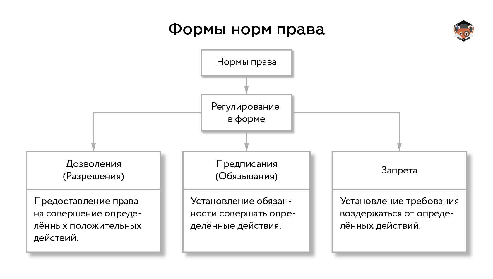

Норма права (от лат. norma — мера, правило, образец, стандарт) — это общеобязательное формально-определённое правило поведения, установленное и обеспеченное обществом и государством, закреплённое и опубликованное в официальных актах, направленное на регулирование общественных прав и обязанностей участников общественных отношений.
Отличительные особенности норм права
Нормы права, наряду с экономическими, политическими, моральными, религиозными, эстетическими нормами, традициями и обычаями, правилами этикета, принадлежат к социальным нормам, но имеют свои отличительные особенности:
- закрепленность в законе (или в других нормативных актах);
- общеобязательность: обязаны соблюдать все — и отдельные лица, и организации;
- обеспеченность силой государства.
Структуру нормы права составляют три элемента:
- Гипотеза. Устанавливает, кто и при наличии каких условий должен исполнять норму права.
- Диспозиция. Указывает на сами права и обязанности, в совокупности составляющие модель поведения.
- Санкция. Указывает на последствия, наступающие при нарушении нормы права.
Система права имеет в своей основе нормы права, из которых складываются правовые институты (например, институт государственной службы, институт договора подряда). Из правовых институтов образуются отрасли, т. е. наиболее крупные подразделения права (например, уголовное право, трудовое право и т. д.). Совокупность всех отраслей и составляет право в целом, т. е. систему права страны.
Признаки правовой нормы
- Регулирование поведения. Нормы права регулируют поведение индивидов и организаций в отношениях между собой.
- Общий (неперсонифицированный) характер. Нормы права не имеют конкретного адресата.
- Общеобязательность. Нормы права обязательны для всех, кому они адресованы.
- Связь с государством. Нормы права устанавливаются или санкционируются государством, при необходимости обеспечиваются государственным принуждением. Единственная в ряду социальных норм, которая исходит от государства.
- Формальная определённость. Нормы права обычно фиксируются в правовых актах государства и закрепляют права, обязанности и запреты. Издаётся в письменной форме.
- Системность.
Норма права — это первичная клеточка права, его исходный элемент → норме права свойственны все те черты, которые характерны для права в целом. Однако это ещё не означает, что понятие нормы права и права совпадают. Право — это система, совокупность правовых норм.
По функциям нормы права подразделяют на регулятивные и охранительные:
Регулятивная норма определяет права и юридические обязанности субъекта права, условия их возникновения и действия.
Охранительная норма определяет условия применения к субъекту права мер государственно-принудительного воздействия, характер и содержание этих мер.
По характеру содержащихся в них правил поведения нормы права подразделяют на управомочивающие, обязывающие и запрещающие.
Формы регулирования норм права — дозволение, предписание, запрет.
Управомочивающая норма — это норма-разрешение, устанавливающая, что можно делать.
Обязывающая норма — это норма-предписание, устанавливающая, что нужно делать.
Запрещающая норма — это норма-запрет, устанавливающая, чего делать нельзя.
Формы реализации норм права — соблюдение, исполнение, использование, применение.
Соблюдение — это воздержание от поступков, запрещённых действующим правом.
Исполнение — это совершение активных поступков по исполнению юридических обязанностей положительного содержания.
Использование — это осуществление правомочий лица, правомерные действия по его усмотрению.
Применение — это активно-властная деятельность компетентных органов по решению в рамках правовых норм конкретных дел, издание специальных правовых актов.
Нормы права получают своё выражение в источниках права, которыми в первую очередь являются нормативно-правовые акты.
{kind=link}
Нормативно-правовые акты
Когда государство принимает ту или иную правовую норму, оно закрепляет ее в официальном письменном документе — нормативном (или правовом) акте. Нормы права различаются в зависимости от того, в каком документе они закреплены.